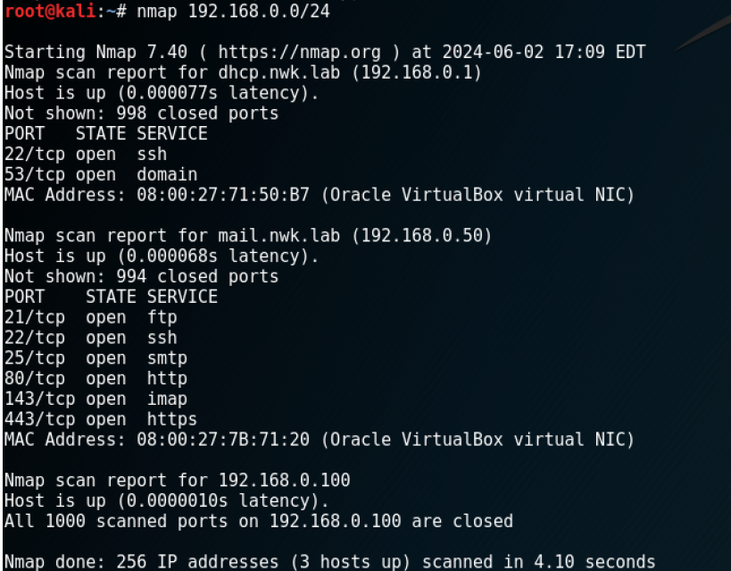

Übersicht
Das Modul "Computernetze und Netzwerkkommunikation" vermittelt die Grundlagen der Netzwerktechnologie, die Architektur und die Kommunikation zwischen Netzwerken. Es umfasst sowohl theoretische Konzepte als auch praktische Übungen mit Tools und Simulationen.
Inhalte
- Netzwerkschichten: OSI-Modell und TCP/IP-Stack.
- Protokolle: HTTP, FTP, SMTP, DNS und IP.
- Sicherheitsmechanismen: TLS, Verschlüsselung und Authentifizierung.
- Tools: Wireshark, Ping, Traceroute, Telnet.
- Angriffe und Schutz: ARP-Spoofing, IP-Spoofing, Denial-of-Service.
Ablauf
- Theoretische Grundlagen:
- Netzwerkadressierung und Protokollanalyse.
- Protokollstrukturen und -anwendungen.
- Praktische Übungen:
- Analyse von Netzwerkverkehr mit Wireshark.
- Simulation von DNS- und Mail-Servern.
- Erstellung und Einsatz von SSL-Zertifikaten.
- Implementierung eines einfachen DNS-Servers.
- Entwicklung eines sicheren Webservers mit TLS.
- Erstellung eines Netzwerkprotokollsimulators.
Ziele des Moduls
Studierende sollen ein fundiertes Verständnis für Netzwerktechnologien und deren Anwendung in der Praxis entwickeln. Ziel ist es, Netzwerke zu konfigurieren, zu analysieren und gegen potenzielle Angriffe zu schützen.
Beispiel
Nach der Information wie viele Ports geschlossen sind folgt eine Auflistung an offenen Ports und Diensten. Bei der Eingabe für das gesamte Netzwerk
• nmap 192.168.0.0/24
werden alle aktiven Server im gesamten Netzwerk angezeigt und über welche IP diese laufen. Für jeden Server ist auch hier aufgelistet welche Server geschlossen und offen sind und welche Dienste für die offenen angeboten werden.
